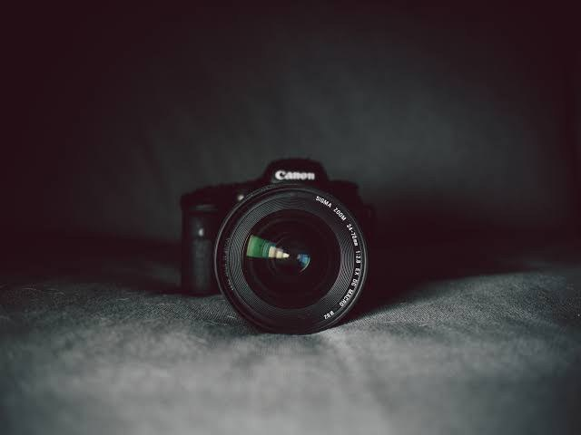
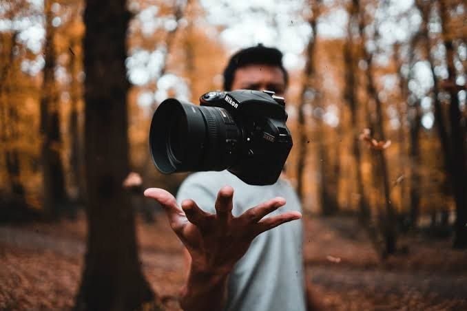
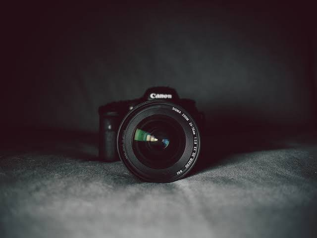
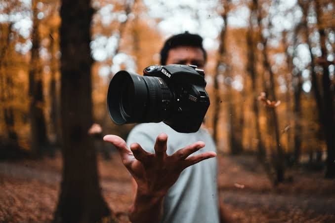

Introduction to Photography
Photography is the art of capturing light with a camera, usually via a digital sensor or film, to create an image. It is a medium of expression and a way to capture moments in time.
Equipment Needed for Photography
- Camera
- Lenses
- Tripod
- Lighting Equipment
- Camera Bag
Photography Techniques
Here are some photography techniques to help you get started:
- Rule of Thirds
- Leading Lines
- Framing
- Depth of Field
- Shutter Speed